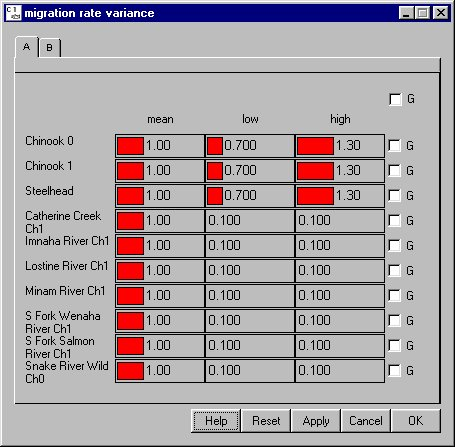

Migration Rate Variance: Variance in Velocity
Selecting Behavior Migration Rate Variance opens a window for setting the variability of the velocity of each stock. This window contains three sliders for each stock, denoting a mean, low, and high value. These values produce the envelope around the velocity for each release of each stock: a larger envelope around the mean value means that stock velocity is highly variable from model run to model run. Migration rate variation differs from VVar in that it applies to the entire stock and produces variation in velocity on a game by game basis. VVAR, conversely, operates to produce "spread" in a release over the entire course of migration.
Migration Rate Variance opens a window for setting the variability of the velocity of each stock. This window contains three sliders for each stock, denoting a mean, low, and high value. These values produce the envelope around the velocity for each release of each stock: a larger envelope around the mean value means that stock velocity is highly variable from model run to model run. Migration rate variation differs from VVar in that it applies to the entire stock and produces variation in velocity on a game by game basis. VVAR, conversely, operates to produce "spread" in a release over the entire course of migration.
Warning. The impact of large variance in velocity can be substantial; it is not recommended to alter the calibrated values of migration rate variance.
Migration rate variance is defined by a piecewise linear distribution within the range identified by low and high values. When the low and high values are set to zero or when the low and high are set to the mean value, COMPASS uses the mean value at all times (the term becomes deterministic). When the low and high values are not equal, COMPASS uses the mean, low and high values to randomly generate a value when executed with variance suppression turned off in the Runtime Settings window under the Run Menu. With variance suppression turned on, COMPASS uses the mean value and ignores the high and low values. In either case, the mean value must lie within the central two quartiles of the distribution (i.e., the middle 50%). For example, if the low value is set to 0 and the high value is set to 100 then the mean value must be set between 25 and 75. If the mean value does not conform to this restriction, COMPASS will abort the run and generate an error message in the Message Log (if open) specifying which species or stocks have bad values.
This is a Slider Input window. Click on the letter tabs to page through the species and stock list.

Migration Rate Variance window